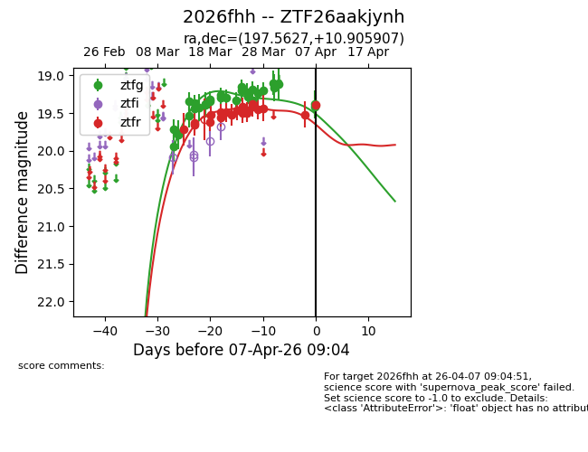
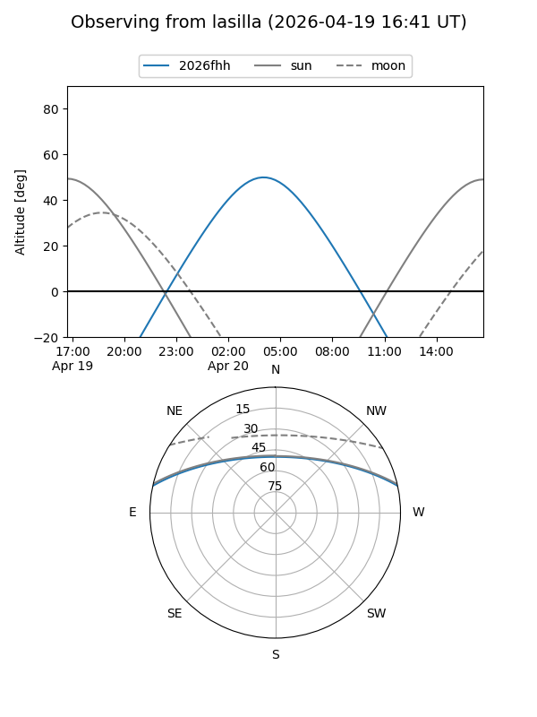
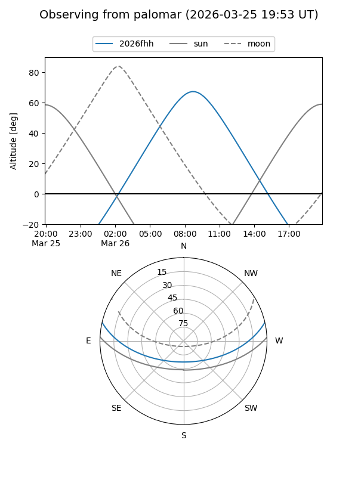
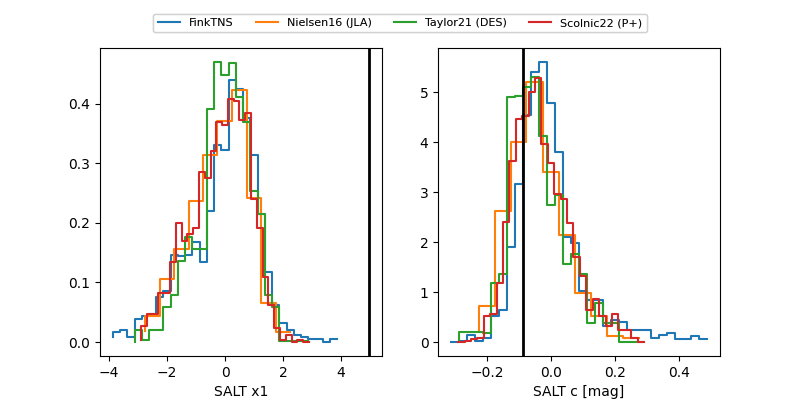

2026fhh
Target 2026fhh at 2026-04-07 09:09
Aliases and brokers:
FINK: link
Lasair: link
ALeRCE: link
TNS: link
YSE: link
alt names
ZTF26aakjynh (ztf,fink_ztf)
2026fhh (tns,yse)
Coordinates:
equatorial (ra, dec) = 197.5627,+10.90591
equatorial (HMS+DMS) = 13:10:15.04,+10:54:21.26
galactic (l, b) = (319.0915,+73.18468)
Flags:
Photometry:
last ztfg=19.38, ztfr=19.40
29 ztfg, 20 ztfr detections
Lightcurve

Visibility


Additional plots
